Жизнь протекает на большом пространстве разнообразной поверхности земного шара.
Биосфера – это оболочка Земли, где существуют живые организмы.
Биосфера включает в себя:
- Нижняя часть атмосферы (воздушная оболочка Земли)
- Гидросфера (водная оболочка Земли)
- Верхняя часть литосферы (твердая оболочка Земли)
Каждая из этих оболочек Земли имеет особые условия, создающие разные среды жизни. Различными условиями сред жизни порождается многообразие форм живых организмов.
Среды жизни на Земле. Рис. 1.
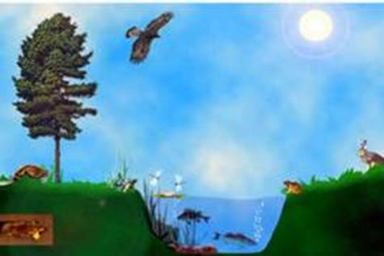
Рис. 1. Среды жизни на Земле
Выделяют следующие среды обитания на нашей планете:
- Водную
- Наземно-воздушную (рис. 2)
- Почвенную
- Организменную.
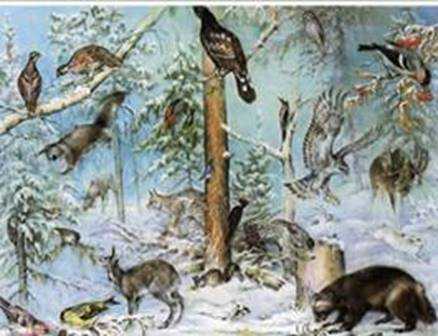
Рис. 2. Наземно-воздушная среда обитания
Жизнь в каждой среде имеет свои особенности. В наземно-воздушной среде достаточно кислорода и солнечного света. Но часто не хватает влаги. В связи с этим растения и животные засушливых мест обитания имеют специальные приспособления для добывания, запасания и экономичного расходования воды. В наземно-воздушной среде бывают значительные изменения температуры, особенно в районах с холодной зимой. В этих районах в течение года заметно меняется вся жизнь организма. Осенний листопад, отлет перелет птиц в теплые края, смена шерсти у зверей на более густую и теплую - все это приспособление живых существ к сезонным изменениям в природе. Для животных, обитающих в любой среде, важная проблема – это передвижение. В наземно-воздушной среде можно передвигаться по Земле и по воздуху. И животные этим пользуются. Ноги одних приспособлены к бегу: страус, гепард, зебра. Других – к прыжкам: кенгуру, тушканчик. Из каждых 100 обитающих в этой среде животных 75 умеют летать. Это большинство насекомых, птиц и некоторые звери, например, летучая мышь. (Рис. 3).
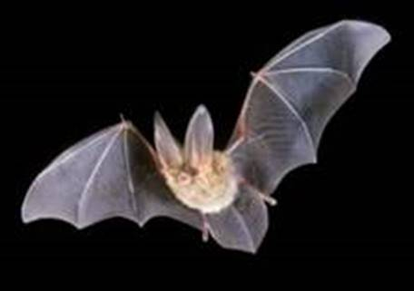
Рис. 3. Летучая мышь
Чемпион по скорости полета среди птиц – стриж. 120 км/ч – обычная для него скорость. Птички колибри взмахивают крыльями до 70 раз в секунду. Скорость полета у разных насекомых такова: у златоглазки – 2 км/ч, у комнатной мухи – 7 км/ч, у майского жука – 11 км/ч, у шмеля – 18 км/ч, а у бабочки-бражника – 54 км/ч. Наши летучие мыши невелики ростом. Но их родственники крыланы достигают в размахе крыльев 170 см.
Крупные кенгуру совершают прыжки до 9 метров.
Птиц от всех других существ отличает способность летать. К полету приспособлено все тело птицы. (Рис. 4). Передние конечности птиц превращены в крылья. Так что птицы стали двуногими. Оперенное крыло намного более приспособлено к полету, чем летательная перепонка летучих мышей. Поврежденное оперение крыла быстро восстанавливается. Удлинение крыла достигается за счет удлинения перьев, а не костей. Длинные тонкие кости летающих позвоночных могут легко ломаться.
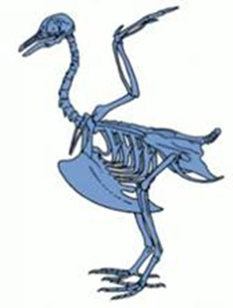
Рис. 4. Скелет голубя
Как приспособление для полета на грудине птиц развился костный киль. Это опора для костных летательных мышц. Некоторые современные птицы лишены киля, но одновременно они утратили способность летать. Все лишние тяжести в строении птиц, мешающие полету, природа постаралась устранить. Максимальный вес всех крупных летающих птиц достигает 15-16 кг. А у нелетающих, например страусов, он может превышать 150 кг. Кости птиц в процессе эволюции становились полыми и легкими. При этом они сохранили прочность.
Первые птицы имели зубы, но затем тяжелая зубная система полностью исчезла. У птиц появился роговой клюв. Вообще полет – несравненно более скоростной способ передвижения, чем бег или плавание в воде. Но затраты энергии примерно вдвое выше, чем при беге и в 50 раз выше чем при плавании. Поэтому птицы должны поглощать довольно много пищи.
Полет, может быть:
- Машущий
- Парящий
Парящий полет в совершенстве освоили хищные птицы. (Рис. 5). Они используют теплые потоки воздуха, поднимающиеся от нагретой земли.
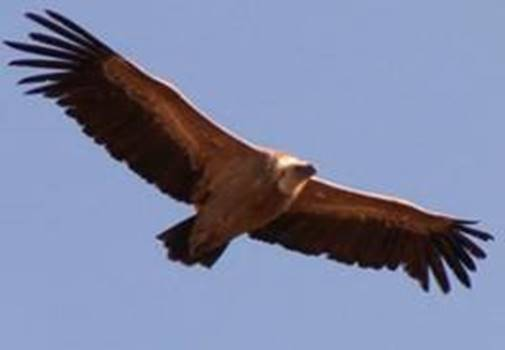
Рис. 5. Белоголовый сип
Рыбы и ракообразные дышат жабрами. Это специальные органы, которые извлекают из воды растворенный в ней кислород, необходимый для дыхания.
Лягушка, находясь под водой, дышит кожей. Освоившие воду млекопитающие дышат легкими, им необходимо периодически подниматься к поверхности воды для вдоха.
Подобным образом ведут себя и водные жуки, только у них, как и у других насекомых, не легкие, а особые дыхательные трубочки – трахеи.
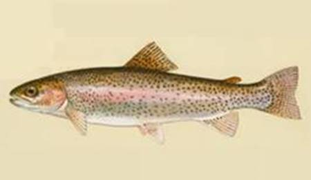
Рис. 6. Форель
Одни организмы (форель) могут жить только в богатой кислородом воде. (Рис. 6). Сазан, карась, линь выдерживают недостаток кислорода. Зимой, когда многие водоемы скованы льдом, может наступить замор рыб, т. е. массовая гибель их от удушья. Чтобы кислород поступал в воду, во льду прорубают лунки. В водной среде меньше света, чем в наземно-воздушной. В океанах и морях на глубине 200 метров – царство сумерек, а еще ниже – вечная тьма. Соответственно, водные растения встречаются лишь там, где достаточно света. Глубже могут жить только животные. Глубоководные животные питаются падающими из верхних слоев мертвыми останками различных морских обитателей.
Особенность многих морских животных – это приспособление для плавания. У рыб, дельфинов и китов – это плавники. (Рис. 7), у тюленей и моржей – ласты. (Рис. 8). У бобров, выдр, водоплавающих птиц есть перепонки между пальцами. У жука плавунца есть плавательные ножки, похожие на весла.
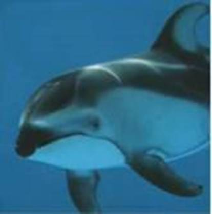
Рис. 7. Дельфин
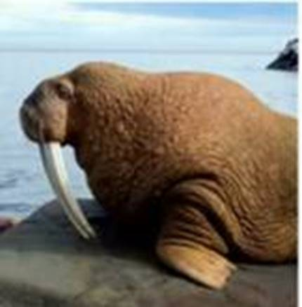
Рис. 8. Морж
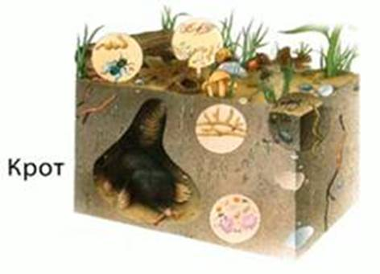
Рис. 9. Почва
В водной среде воды всегда достаточно. Температура здесь меняется меньше, чем температура воздуха, а вот кислорода зачастую не хватает.
Почвенная среда - дом для множества бактерий и простейших. (Рис. 9). Здесь же располагаются грибницы грибов, корни растений. Заселили почву и самые разные животные: черви, насекомые, приспособленные к рытью звери, например, кроты. Обитатели почвы находят в ней необходимые для них условия: воздух, воду, пищу, минеральные соли. В почве меньше кислорода и больше углекислого газа, чем на свежем воздухе. А воды здесь бывает слишком много. Температура в почвенной среде более ровная, чем на поверхности. Свет в почву не проникает. Поэтому населяющие её животные обычно имеют очень маленькие глаза или вовсе лишены органов зрения. Выручает их обоняние и осязание.
Образование почвы началось только с появлением на Земле живых существ. С тех пор в течение миллионов лет идет непрерывный процесс её образования. Твердые горные породы в природе постоянно разрушаются. Получается рыхлый слой, состоящий из мелких камешков, песка, глины. В нем почти нет питательных веществ, необходимых для растений. Но все же неприхотливые растения и лишайники селятся здесь. Из их остатков под воздействием бактерий образуется перегной. Теперь в почве могут поселиться растения. Отмирая, они также дают перегной. Так постепенно почва превращается в среду для обитания. В почве селятся различные животные. Они повышают ее плодородие. Таким образом, почва не может появиться без живых существ. В то же время и растениям и животным необходима почва. Поэтому в природе все взаимосвязано.
1 см почвы образуется в природе за 250-300 лет, 20 см – за 5-6 тыс лет. Вот почему нельзя допускать разрушение и уничтожение почвы. Там, где люди уничтожили растения, почву размывает вода, выдувает сильный ветер. Почва многого боится, например, ядохимикатов. Если их вносить больше нормы, они накапливаются в ней, загрязняя её. В результате гибнут черви, микробы, бактерии, без которых почва теряет плодородие. Если в почву вносится слишком много удобрения или её слишком обильно поливают, в ней накапливается избыток солей. А это вредно для растений и для всего живого. Чтобы защитить почву, на полях необходимо сажать лесные полосы, правильно распахивать на склонах, а зимой проводить снегозадержание.
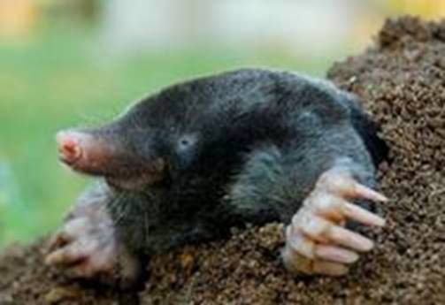
Рис. 10. Крот
Крот от рождения до смерти живет под землей, света белого не видит. Как землекоп, он не знает себе равных. (Рис. 10). Всё у него для рытья приспособлено наилучшим образом. Мех короткий и гладкий, чтобы не цепляться за землю. Глазки у крота крохотные, с маковое зернышко. Веки их плотно закрывают, когда это необходимо, а у некоторых кротов глаза и вовсе заросли кожей. Передние лапы у крота – настоящие лопаты. Кости на них плоские, а кисть вывернута так, чтобы удобней было рыть землю перед собой и отгребать её назад. За день он прорывает 20 новых ходов. Подземные лабиринты кротов могут простираться на огромные расстояния. Ходы у крота двух видов:
- Гнездовые, в которых он отдыхает.
- Кормовые, они располагаются недалеко от поверхности.
Чуткое обоняние подсказывает кроту, в каком направлении копать.
Строение тела крота, цокора и слепыша говорит о том, что все они обитатели почвенной среды. Передние ноги у крота и цокора – главный инструмент для рытья. Они плоские, как лопаты, с очень большими когтями. А у слепыша ноги обычные. Он вгрызается в почву мощными передними зубами. Тело у всех этих зверьков овальное, компактное, для более удобного перемещения по подземным ходам.
Эту среду обитания освоили в основном паразитические черви, такие как аскариды, паразитирующие в тонком кишечнике человека. (Рис. 11). У паразитов нет недостатка в пище. Правда, их жизненное пространство ограничено организмом хозяина.
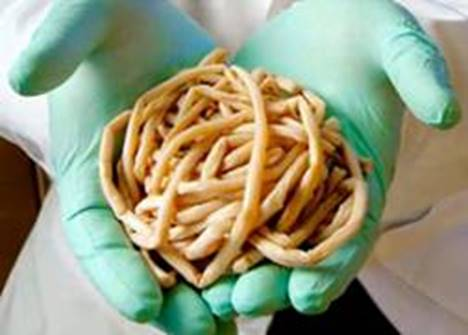
Рис. 11. Аскариды
Ленточные черви (ремнец, цепень) – высокоспециализированные паразиты, обитающие в кишечнике человека и животных. Тело свиного цепня в длину достигает 3 м. На головке у этого червя есть присоски и крючья для закрепления в организме хозяина. Среди круглых червей наиболее известными паразитами является человеческая аскарида и острицы. Длина самцов человеческой аскариды – 15–25 см, а самок – 20–40 см. Аскариды очень плодовиты: каждая самка откладывает до 200 тыс. яиц...
Список рекомендованной литературы
1. Мельчаков Л.Ф., Скатник М.Н. Природоведение: учеб. для 3,5 кл. сред. шк. – 8-е изд. – М.: Просвещение, 1992. – 240 с.: ил.
2. Бахчиева О.А., Ключникова Н.М., Пятунина С.К. и др. Природоведение 5. – М.: Учебная литература.
3. Еськов К.Ю. и др. Природоведение 5 / Под ред. Вахрушева А.А. – М.: Баласс.
Рекомендованные ссылки на ресурсы сети Интернет
1. Энциклопедия Вокруг света (Источник).
2. Географический справочник (Источник).
3. Факты о материке Австралия (Источник).
Рекомендованное домашнее задание
1. Перечислите среды жизни на нашей планете.
2. Назовите животных почвенной среды обитания.
3. Как животные разных сред обитания приспособились к передвижению?
4. *Подготовьте небольшое сообщение об обитателях наземно-воздушной среды.